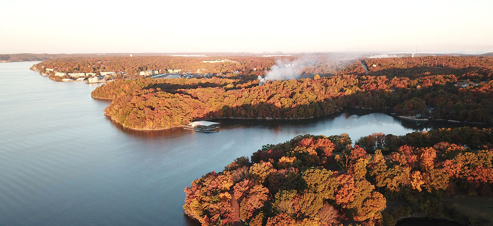

Lake Of The Ozarks
🐟
Ever since I was a kid my family and I have always loved going to the Lake Of The Ozarks. Spending time with
each other and enjoying a nice day in the water always brings out the best side of my family.We all always enjoy
all the water activities we get to experience while we are down there too. Whether its driving the jetski around
or getting absolutely launched off the tube by my uncle. This trip never disappoints and is always a great time
for everyone.

Dallas, Texas
🏈
My Aunt and Uncle moved to Dallas with their kids back in 2006. Ever since they moved, my family will visit them
down there from time to time. The city of Dallas is always so fun to see and we always have something to do
whether its going to the Cowboys game or just exploring the city. My uncle is a huge fan of the Cowboys so we
always end up going to a game when we visit.
The beach has always been a great get away vacation spot. Deep sea fishing with my brothers and dad is one of
my favorite thing to do while we visit here. The sea food is great when we go out and the people are always
very welcoming.
Denver, Colorado
⛷
The Mountains are always a site to see. Even though I've only visited Denver a hand full of times I can
confidently say that Denver has the best views I have ever seen. The mountains and the city both are very cool
places and theres always something new to experience when your there.